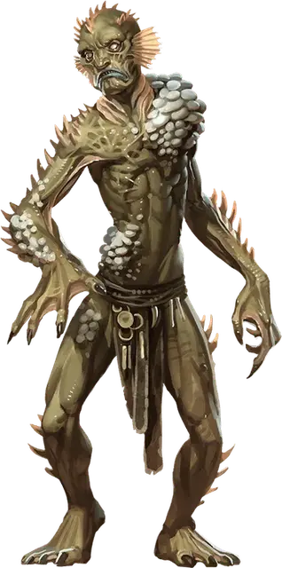

Морское отродье
Sea Spawn
Средний Монстр, обычно нейтрально-злой

Класс Доспеха 11 (природный доспех)
Хиты 32 (5к8 + 10)
Скорость 20 футов, плавая 30 футов
| мод | спас | ||
|---|---|---|---|
| СИЛ | 15 | +2 | +2 |
| ЛОВ | 8 | −1 | −1 |
| ТЕЛ | 15 | +2 | +2 |
| мод | спас | ||
|---|---|---|---|
| ИНТ | 6 | −2 | −2 |
| МДР | 10 | +0 | +0 |
| ХАР | 8 | −1 | −1 |
Чувства тёмное зрение 120 футов, пассивное Восприятие 10
Языки Общий, Акван
Опасность 1 (200 опыта)
Бонус мастерства +2
Среда обитания Побережье, Под водой
Особенности
Языки. Понимает Акван и Общий но не может говорить.
Ограниченная амфибия. . Морское отродье может дышать и на воздухе и под водой, но должен погружаться в море хотя бы раз в день в течение 1 минуты, чтобы не задохнуться.
Действия
Мультиатака. Морское отродье совершает два Безоружных удара и одна атака Рыбьей анатомией.
Безоружный удар. . Рукопашная атака оружием: +4 к попаданию, досягаемость 5 футов, одна цель. Попадание: 4 (1к4 + 2) дробящего урона.
Рыбья анатомия. . Морское отродье использует из следующих вариантов атаки (выберите одно или бросьте к6).
• 1–2: Укус. Рукопашная атака оружием: +4 к попаданию, досягаемость 5 футов, одна цель. Попадание: 4 (1к4 + 2) колющего урона.
• 3–4: Ядовитые иглы. Рукопашная атака оружием: +4 к попаданию, досягаемость 5 футов, одно существо. Попадание: 3 (1к6) урона ядом и цель должна преуспеть в спасброске Телосложения Сл 12 или стать отравленной на 1 минуту. Цель может повторять спасбросок в конце каждого своего хода, оканчивая этот эффект на себе при успехе.
• 5–6: Щупальце. Рукопашная атака оружием: +4 к попаданию, досягаемость 10 футов, одна цель. Попадание: 5 (1к6 + 2) дробящего урона и цель становится схваченной (Сл высвобождения 12) если это существо Среднего размера или меньше. До окончания захвата морское отродье не может использовать это щупальце на другую цель.
Описание
Многие истории, которые поются морские песни или которые стали сказками в портовых тавернах, рассказывают о людях, потерявшихся в море, но не просто утонувших и пропавших. Этих несчастных забрал океан и они живут как морские отродья, населяющие волны как измученные отражения своих прежних сущностей. Их покрывают кораллы. Ракушки цепляются за их холодную кожу. Легкие что когда–то наполнялись воздухом теперь так же дышат водой.
Истории рассказывают о множестве причин таких странных превращений. «Не стоит влюбляться в морскую эльфийку или мерфолка», говорят некоторые. «Возвращайся в порт до шторма, и не важно как соблазнителен улов.» «Чти морских богов так, как они требуют, но никогда не обещай им свое сердце.» Такие рассказы о предосторожностях скрывают правду: под волнами рыскают твари, которые стремятся завладеть сердцами и умами обитателей суши.
Кракены [kraken], моркоты [morkoth], морские карги [sea hag], мариды [marid], штормовые великаны [storm giant], дракочерепахи [dragon turtle] – все эти и другие морские существа могут отметить смертных как свою собственность и заставить их быть миньонами. Такие люди могут стать обязанными хозяину посредством мрачной сделки, или могут стать проклятыми этими существами. Однажды превращенный в рыбью форму, никто не может покидать море надолго, если не хочет умереть через несколько дней.
Морские отродья бывают многих форм. Индивид может иметь щупальца вместо рук, челюсти акулы, шипы морского ежа,плавник кита, глаза осьминога, волосы из морских водорослей или любую комбинацию таких свойств.Некоторые морские отродья имеют рыбные части тела, которые дают им особые возможности.
Морское отродье с Сиреневых Скал
Посетители вереницы островов под названием Сиреневые Скалы (в сеттинге Забытых Королевств) могут заметить один любопытный факт о людях, населяющих эти острова: среди них нет младенцев или стариков. Все это потому, что дети, рождающиеся у островитян, выбрасываются в море и их получает кракен по имени Сларкретел. В результате дети превращаются в фанатиков, посвятивших себя кракену. Они выходят из моря как люди, но по достижении старого возраста, они превращаются в морских отродий и присоединяются к своему хозяину в глубинах вод. Некоторые дети возвращаются с частичными трансформациями, что делает их полу–зверьми до достижения старого возраста и полного превращения. Этих извергов прячут до последнего изменения, чтобы сохранить секрет Сиреневых Скал.
Жрецы Кракена [kraken priest] — это пастыри стада кракена. Большинство жрецов родом с острова, но некоторые из них мерфолки или морские эльфы, которые живут в водах вокруг Сиреневых Скал.